주소 뒤에 ?edit=1 → [고치기] → 칸에 적기 → [저장하기]. 아래 제목을 누르면 그 쪽으로 바로 가요.
이 설명서는 food902 쇼핑몰을 내 가게로 바꾸는 방법을 그림으로 알려 줘요. 코드는 몰라도 돼요. 주소 뒤에 ?edit=1 → [고치기] → 칸에 적기 → [저장하기], 이 네 가지면 끝이에요.
?edit=1 을 붙여요.| 표시 | 뜻 |
|---|---|
| 1 | 그림의 번호 = 아래 설명의 번호예요. |
| 빨간 네모 = 눌러야 할 곳이에요. | |
| 저장하기 | 화면에 있는 버튼 이름이에요. |
바꾼 내용은 카페24 게시판 「뉴스/이벤트」(2번)에 글로 저장돼요. 이 게시판이 켜져 있는지 딱 한 번만 확인해요.
인터넷 주소창에 내 쇼핑몰 주소를 쓰고 뒤에 ?edit=1 을 붙여요.
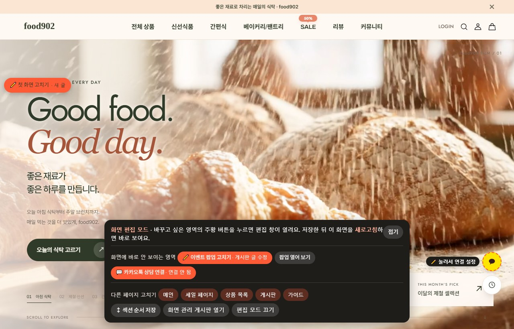
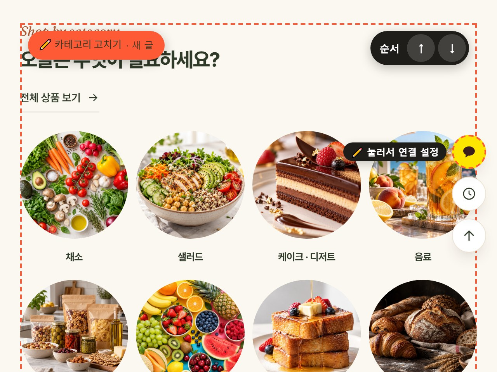
| 버튼 옆 글자 | 뜻 |
|---|---|
| · 새 글 | 아직 한 번도 안 바꾼 곳이에요. 지금 화면 내용이 칸에 미리 채워져서 열려요. |
| · 게시판 글 수정 | 전에 바꾼 적이 있어요. 저장했던 내용이 열려요. |
| 이렇게 쓰면 | 화면에서는 |
|---|---|
| 칸 안에서 줄 바꾸기(Enter) | 화면에서도 줄이 바뀌어요. |
*강조* 처럼 별표로 감싸기 | 기울어진 강조 글씨가 돼요. |
| 칸을 비우기 | 그 글자가 화면에서 사라져요. |
링크 칸에 /product/list.html?cate_no=24 | 누르면 그 주소로 가요. (24 = 신선식품 분류) |
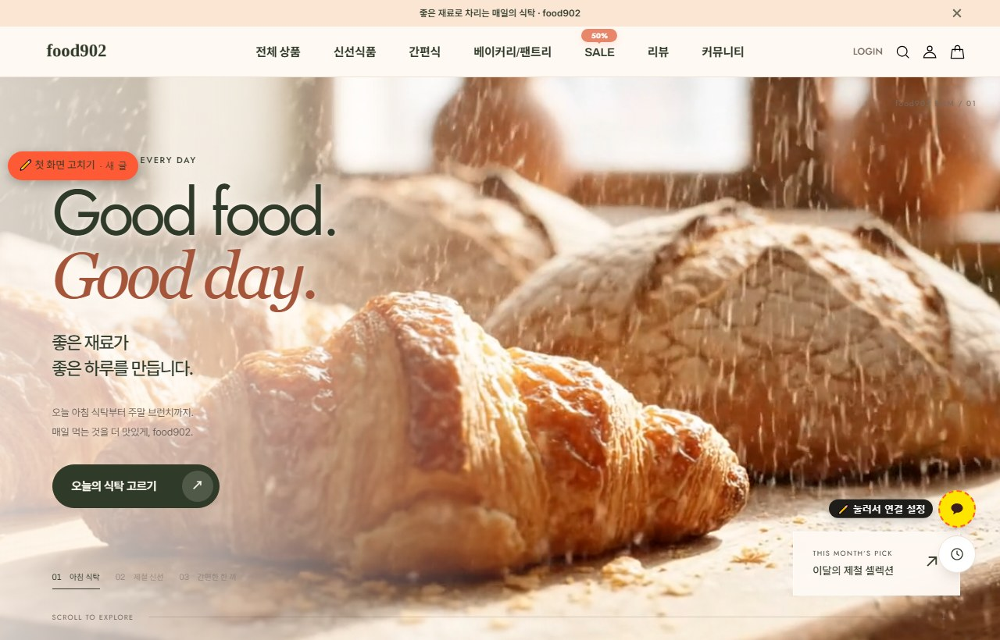
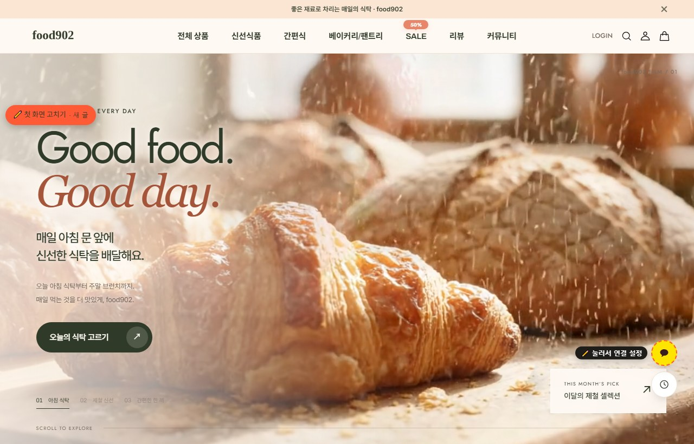
편집 화면 위쪽 막대에 되돌리는 버튼이 모여 있어요. 마음 놓고 바꿔 보세요.
| 버튼 | 하는 일 |
|---|---|
| ↶ 실행 취소 | 방금 바꾼 것을 하나씩 되돌려요. (Ctrl+Z) |
| ↷ 다시 실행 | 되돌린 것을 다시 해요. (Ctrl+Y) |
| ↺ 되돌리기 | 칸마다 있어요. 그 칸만 원래대로 돌아가요. |
| ⟲ 처음 상태로 | 이 창을 처음 열었을 때로 모두 돌아가요. |
| 🕘 이전 저장본 불러오기 | 이 컴퓨터에서 저장했던 최근 5개 중 하나를 불러와요. |
| 고급: 원래 편집기 | 카페24 원래 글쓰기 화면을 보여 줘요. 보통은 쓸 일이 없어요. |
메인 화면에는 [고치기] 버튼이 있는 영역이 18곳 있어요. 위에서부터 이 순서예요.
| 영역 이름 | 바꿀 수 있는 것 |
|---|---|
| 첫 화면 | 큰 영상·사진 3장면, 제목, 설명, 버튼 (자세히) |
| 이용 안내 | 배송·교환·후기·문의 안내 칸 (칸 늘리기 가능) |
| 식탁 고르기 | 신선식품·간편식 큰 사진 2장, 제목, 바로가기 목록 |
| 카테고리 | 동그라미 사진과 이름·링크 (칸 늘리기 가능) |
| 추천 상품 제목 · 신상품 제목 · 인기 상품 제목 | 제목과 링크 글자 (상품은 관리자 › 메인 진열) |
| 메뉴 찾기 | 사진과 안내 글자 |
| 장보기 가이드 | 제목, 설명, 보관법 1~3 |
| 장면 속 상품 | 장면 사진 4장, 사진 속 상품 점 (자세히) |
| 기획전 | 큰 사진 2장과 글자 (선물세트 · 세일) |
| 체크리스트 | 사진, 장보기 준비물 목록 |
| 포토리뷰 제목 | 제목과 버튼 글자 (리뷰 사진은 자동) |
| 푸드 노트 | 가이드 카드 사진·글자 (칸 늘리기 가능) |
| 회원 안내 · 자주 묻는 질문 | 회원 안내 글자·사진, 질문과 답 (칸 늘리기 가능) |
| 맨 아래 브랜드 | 큰 글자 사진과 문장 |
| 이벤트 팝업 | 팝업 사진·글자·링크, 마감 타이머 (자세히) |
카테고리·이용 안내·질문처럼 같은 모양 칸이 여러 개인 영역은 칸 수를 바꿀 수 있어요.
장면 사진 위 + 점을 누르면 그 상품이 열려요. 점 자리와 상품을 그림으로 정해요.
product_no=11 숫자예요. 이름·가격·사진은 쇼핑몰 상품에서 자동으로 가져와요.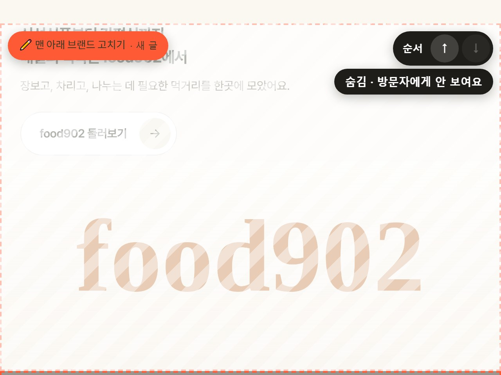
메인 화면 섹션을 위·아래로 옮기고, [순서 저장하기] 한 번이면 끝이에요.
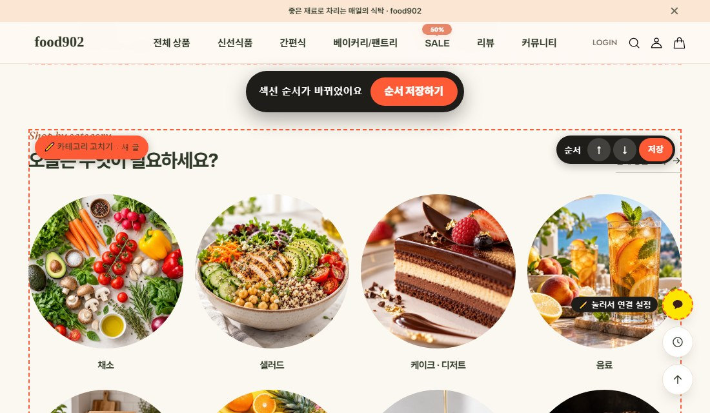
스크롤하면 1번 → 2번 → 3번 장면이 차례로 나오는 큰 화면이에요. food902 는 1번 장면이 10초 음식 영상, 2 · 3번은 사진이에요.
| 칸 | 뜻 |
|---|---|
| 사진 위 작은 글 · 오른쪽 아래 작은 글 · 제목 · 링크 | 영역 전체에 한 번씩 나오는 글자예요. |
| 1번 · 2번 · 3번 | 장면마다 사진, 큰 영문 글, 제목, 설명, 버튼, 아래 메뉴 이름 |
| 1번 영상 주소 | 다른 영상을 쓰려면 mp4 주소를 적어요. 영상 대신 사진을 쓰려면 [사진 바꾸기]로 사진을 올려요(영상 주소는 알아서 비워져요). |
메인에 들어오면 뜨는 팝업이에요. 팝업 안의 [이 팝업 고치기](또는 아래 검은 막대의 [이벤트 팝업 고치기])를 누르면 오른쪽 창이 열려요. 같은 번호끼리 짝이에요.
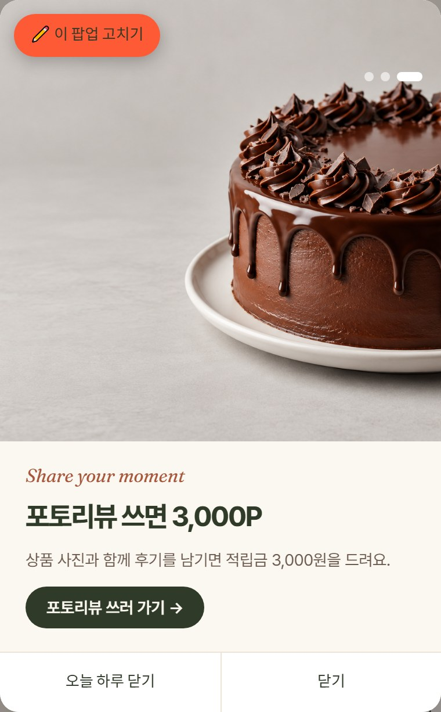
2026-10-31 23:59 처럼 쓰면 남은 시간 타이머가 붙어요화면 오른쪽 아래 노란 말풍선 버튼을 우리 가게 카카오톡 채널로 연결해요. 코드 없이 편집 모드에서 바로 해요.
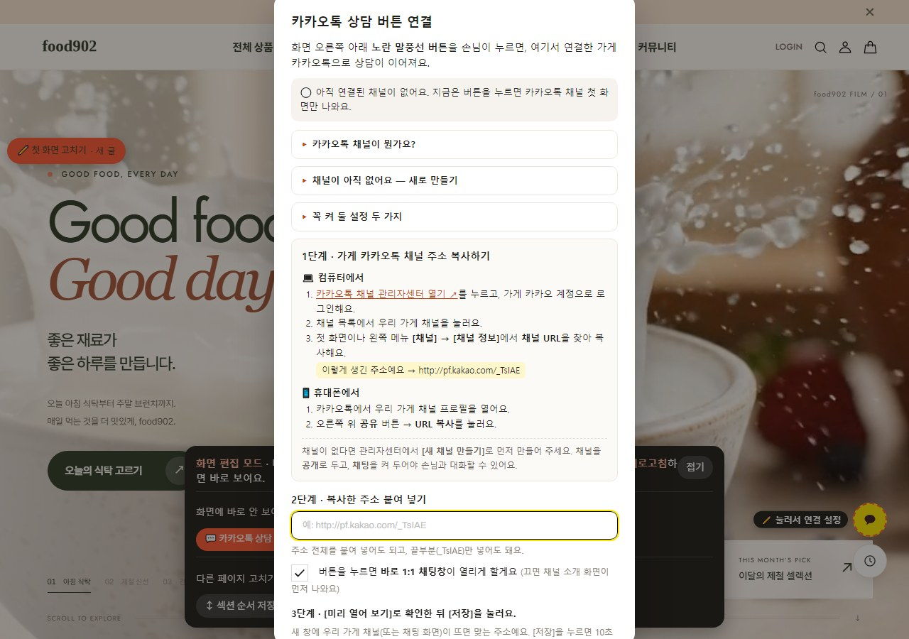
pf.kakao.com/_xxxx)를 복사해 칸에 붙여 넣어요.메인 편집 모드에서 메뉴의 SALE을 누르거나 아래 막대의 [세일 페이지]를 누르면, 세일 페이지가 편집 모드로 열려요.
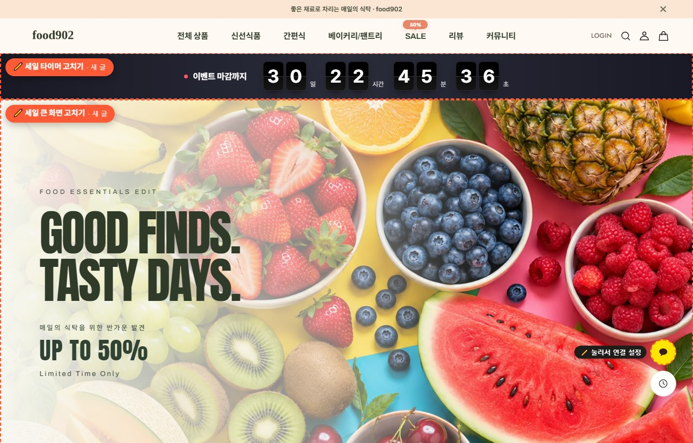
| 아래로 내리면 나오는 영역 | 바꿀 수 있는 것 |
|---|---|
| 세일 정보 띠 | 흘러가는 띠 글자 |
| 세일 카테고리 3칸 | 3칸 사진, 이름, 링크 |
| 세일 쿠폰 뽑기 | 제목, 리본·말풍선 문구, 유의사항 |
| 세일 상품 제목 | 상품 목록 위 제목 |
| 세일 구매 안내 | 안내 카드 제목과 글 |
| 세일 타이머 칸 | 이렇게 써요 |
|---|---|
| 마감 시각 | 2026-10-31 23:59 (한국 시간) |
| 문구 · 끝났을 때 문구 | 예) 이벤트 마감까지 / 이벤트가 끝났어요 |
| 배경색 · 글자색 | #a9542e 같은 색 번호. 비우면 기본 색 |
| 세일 쿠폰 뽑기 칸 | 이렇게 써요 |
|---|---|
| 제목 · 제목 강조 단어 | 제목 안에서 강조할 단어를 따로 적어요. |
| 말풍선 · 말풍선 강조 단어 | 쿠폰 상자 위 말풍선 글자 |
| 유의사항 | 한 줄에 하나씩. {period} {usecon} 은 쿠폰의 사용기간·조건으로 자동으로 바뀌어요. |
| food902 에 만들어 둔 쿠폰 | 할인 | 선착순 | 사용기간 |
|---|---|---|---|
| 50% 쿠폰 | 50% | 10장 | 발급일로부터 7일 |
| 20% 쿠폰 | 20% | 30장 | 발급일로부터 7일 |
| 10% 쿠폰 | 10% | 100장 | 발급일로부터 7일 |
| 5% 쿠폰 | 5% | 300장 | 발급일로부터 7일 |
sale.coupon 에 적어요. 쿠폰은 상품상세 노출안함으로 두어야 뽑기로만 받을 수 있어요.전체 상품 · 신선식품 · 간편식 · 베이커리/팬트리 목록과 검색, 게시판 맨 위의 큰 배너예요. 배너 8개를 한 글에서 바꿔요. 막대의 [상품 목록]이나 편집 모드에서 메뉴를 누르면 돼요.
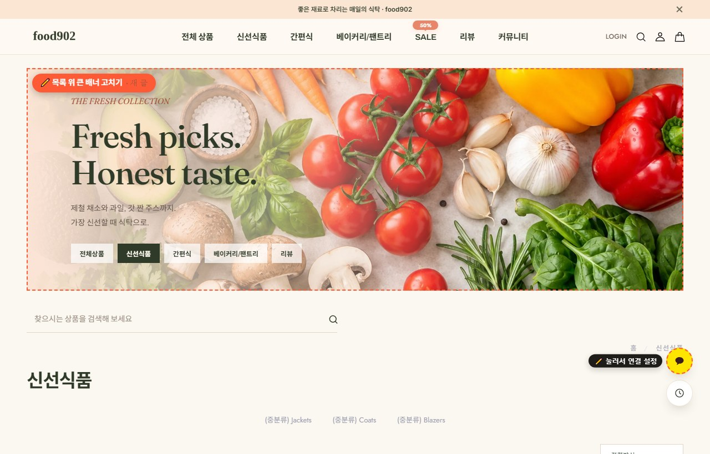
| 편집 화면 번호 | 나오는 곳 |
|---|---|
| 1번 전체 상품 · 2번 신선식품 · 3번 간편식 · 4번 베이커리/팬트리 | 그 분류 상품 목록과 검색 결과 |
| 5번 리뷰 · 6번 공지사항 · 7번 자주묻는질문 · 8번 상품문의 | 그 게시판 목록 |
막대의 [게시판]이나 편집 모드에서 메뉴의 리뷰 · 커뮤니티를 누르면 게시판도 편집 모드로 열려요.
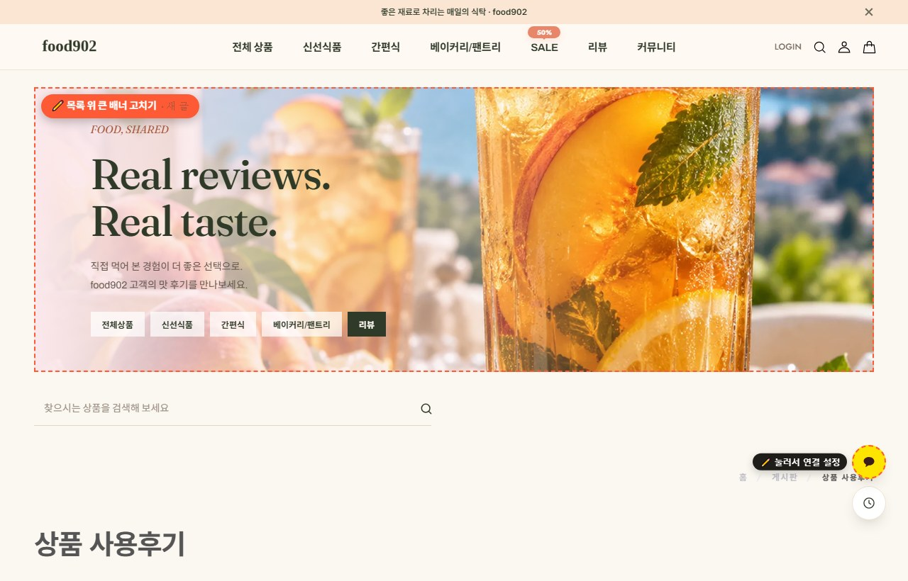
| 바꾸고 싶은 것 | 바꾸는 곳 |
|---|---|
| 게시판 위 이동 탭 (공지사항 · 자주묻는질문 · 상품문의) | store-content.js 의 community.items — 이름과 주소, 순서 |
| 게시판 글 (공지, 자주 묻는 질문의 답 등) | 카페24 관리자 › 게시판 › 게시물 관리 |
| 리뷰 | 손님이 쓴 사용후기가 자동으로 나와요. 사진 후기는 메인 포토리뷰와 상품 카드 ★ 리뷰 N 에도 붙어요. |
메뉴 · 메인의 "푸드 노트"에서 들어가는 장보기 · 보관 가이드 페이지예요. 편집 모드에서 아래 막대의 [가이드]를 누르면 편집 모드로 열려요.
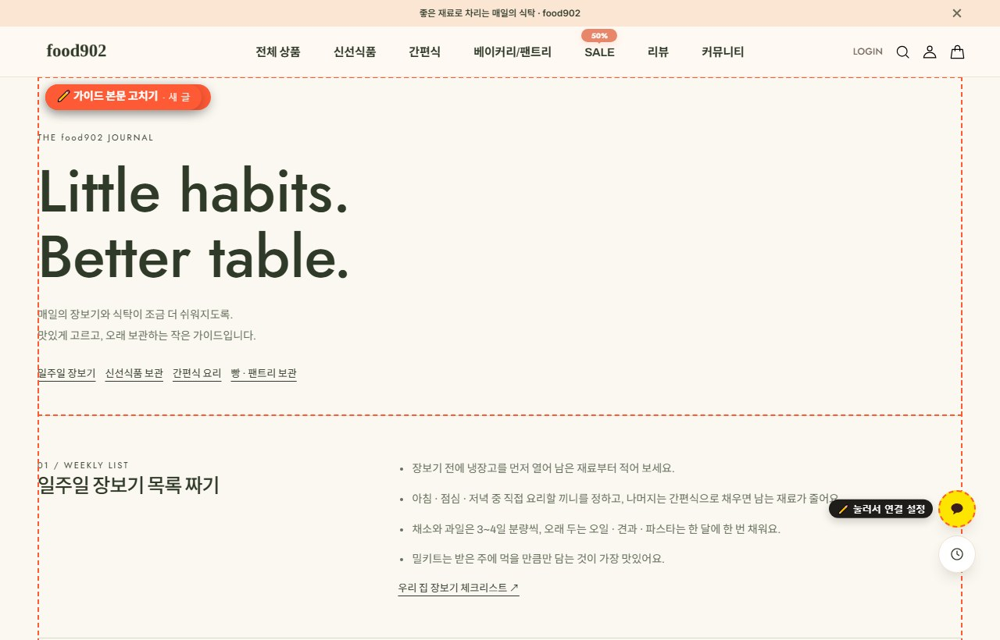
| 영역 | 바꿀 수 있는 것 |
|---|---|
| 가이드 머리글 | 큰 제목, 설명, 목차(한 줄에 「이름 #위치」) |
| 가이드 본문 | 1번~4번 글(일주일 장보기 · 신선식품 보관 · 밀키트 요리 · 빵/팬트리 보관): 번호 글, 제목, 안내 목록(한 줄에 하나), 맨 아래 안내 |
휴대폰 인터넷에서도 주소 뒤에 ?edit=1 을 붙이면 똑같이 [고치기]가 나와요.
| 이럴 때 | 이렇게 해 보세요 |
|---|---|
| 저장했는데 화면이 그대로예요 | 쇼핑몰 창을 새로고침(F5)해요. 손님 화면은 10~30분 뒤에 바뀌어요. ?edit=1 로 열면 바로 보여요. |
| [고치기] 버튼이 안 보여요 | 주소에 ?edit=1 이 붙었는지 봐요. 주소에 ? 가 이미 있으면 &edit=1 로 붙여요. |
| 막대에 "게시판을 쓸 수 없는 상태예요" | 처음 한 번만의 게시판 설정(사용 · 표시 · 관리자 쓰기)을 확인해요. |
| 저장하기를 누르면 로그인하래요 | 같은 브라우저에서 카페24 관리자에 먼저 로그인해요. |
| "사람인지 확인" 화면이 떠요 | 카페24 보안 확인이에요. 화면 안내대로 확인을 마치면 원래 페이지로 돌아가요. 짧은 시간에 너무 많이 누르면 떠요. |
| 사진에 빨간 테두리가 생겼어요 | 권장 크기와 비율이 달라요. 편집 모드 막대의 ⚠ 목록에서 어느 사진인지 보여 줘요. |
| 사진을 못 올렸어요 | 10MB 이하 jpg · png · webp 인지 확인하고 다시 해요. |
| 쿠폰 뽑기를 눌렀는데 발급이 안 돼요 | 관리자로 로그인한 상태예요. 시크릿 창에서 회원으로 로그인해 시험해요. |
| 엉뚱한 곳이 바뀌었어요 / 안 바뀌어요 | 글 제목을 바꾸지 않았는지 봐요. 제목의 영역 이름이 정확히 같아야 해요. |
| 예전 모습으로 돌리고 싶어요 | [고치기] → [이전 저장본 불러오기] 또는 [처음 상태로] → [저장하기] |
| 화면이 이상해졌어요 | 관리자 › 게시판 › 게시물 관리에서 그 영역 글을 지우면 처음 디자인으로 돌아가요. |
내 쇼핑몰로 바꾸는 가장 빠른 순서예요. 하나씩 체크해 보세요.
| 할 일 | 쪽 | |
|---|---|---|
| ☐ | 게시판(뉴스/이벤트 2번 · FAQ 3번) 설정 확인 | 준비 |
| ☐ | 첫 화면 영상·사진·제목을 내 가게 것으로 | 첫 화면 |
| ☐ | 카테고리 이름·사진·링크를 내 분류로 | 칸 늘리기 |
| ☐ | 이벤트 팝업 내용 바꾸기 (안 쓰면 숨기기) | 팝업 |
| ☐ | 장면 속 상품 점에 내 상품번호 넣기 | 상품 점 |
| ☐ | 카카오톡 상담 버튼을 내 채널로 연결 | 카카오톡 |
| ☐ | 안 쓰는 영역 숨기기, 순서 정리 | 숨기기 · 순서 |
| ☐ | 맨 아래 브랜드 문장을 내 가게 소개로 | 메인 지도 |
| ☐ | 목록 위 큰 배너 8개 확인 | 큰 배너 |
| ☐ | 세일 페이지 타이머·문구, 쿠폰 확인 (세일할 때) | 세일 · 쿠폰 |
| ☐ | [연출 예시] 리뷰는 실제 후기가 쌓이면 지우기 | 게시판 |
| ☐ | 휴대폰으로 한 번 둘러보기 | 휴대폰 |